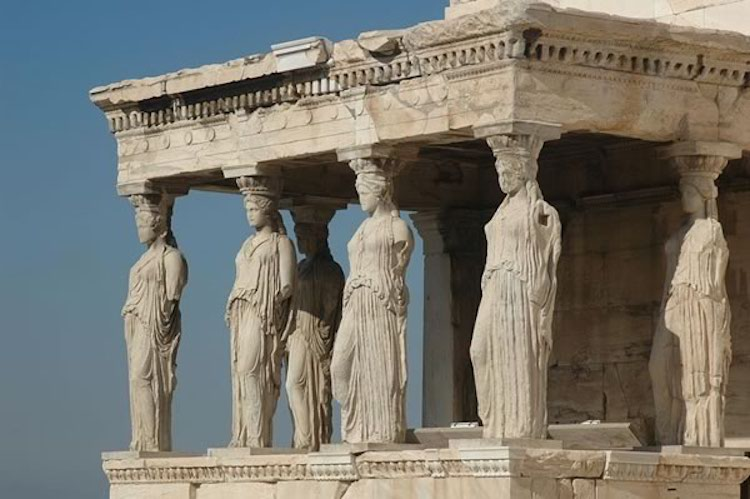
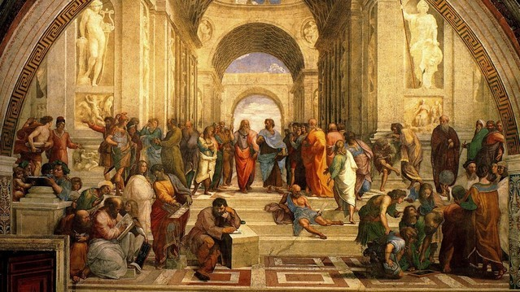
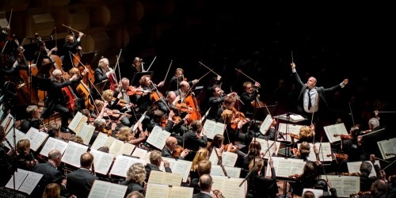

Sanatın Başlangıcı
Sanat, insanın duygularını, düşüncelerini ve hayal gücünü ifade etme arzusundan doğmuştur. İlkel dönemlerde, insanlar mağara duvarlarına av sahneleri çizerken bu, sadece bir hikâye anlatma şekli değil, aynı zamanda bir iletişim aracıydı. Gözlem ve deneyimden yola çıkarak, çevrelerindeki dünyayı anlamlandırmak ve gelecek nesillere bilgi aktarmak için sanatı kullandılar.

Antik Dönem Sanatı
Zamanla, sanat daha derin bir boyut kazandı ve dini, kültürel ve estetik değerlerin bir yansıması haline geldi. Antik Mısır'da firavunları yücelten heykeller ve tapınaklar, Antik Yunan’da ideal güzelliği yansıtan heykeller ve mimarideki mükemmel oranlar, sanatın toplumların kimliğini nasıl şekillendirdiğini gösterdi.
Orta Çağ ve Rönesans
Orta Çağ'da sanat, dini temalarla öne çıktı ve gotik katedraller, insanın Tanrı’ya olan inancını ve bağlılığını sergiledi. Ancak Rönesans ile birlikte insan merkezli bir yaklaşıma geçildi. Leonardo da Vinci ve Michelangelo gibi sanatçılar, insanın potansiyelini ve doğanın güzelliklerini keşfetmek için sanatın sınırlarını zorladılar.
Modern Dönem ve Günümüz
Modern dönemde sanat, bireysel ifade ve toplum eleştirisi için bir araç haline geldi. Empresyonizm, sürrealizm ve soyut sanat gibi akımlar, sanatın sadece güzellik yaratmaktan ibaret olmadığını, aynı zamanda bir düşünceyi, duyguyu ya da protestoyu yansıtma aracı olduğunu gösterdi.
Günümüzde sanat, teknolojinin de etkisiyle dijital platformlara taşındı. NFT’ler, video sanatı ve artırılmış gerçeklik projeleri, sanatın sürekli evrilen bir süreç olduğunu bir kez daha kanıtladı. Ancak değişmeyen bir şey var: Sanat, insanın ruhunu ifade etme ve dünya ile bağ kurma çabasıdır.
